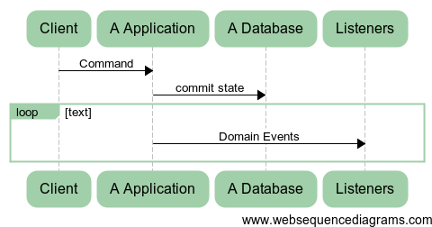

Distributing PHP applications
over http
microservices obligatory buzzword
Giorgio Sironi

Giorgio Sironi (@giorgiosironi)
- I'm a developer (writes code, design stuff)
- Interested in
- Object-oriented programming
- Automated testing and TDD
- Distributed systems
Context

Probably already distributing
| JavaScript Client(*) |
| PHP Web server(*) |
| MySQL database |
| Headless Client(*) |
| PHP Web server(*) |
| MongoDB database |
Why distributing along microservices
- code segregation (hopefully with decoupling as fitness function)
- scalability problems identification
- isolation of failures
- team partitioning (Conway's law)
The problems
| latency | chatty interfaces, N+1 query problem |
| concurrency | lost updates, race conditions |
| partial failure | Another application does not respond (and you don't know why) |
4 styles of integration
File upload
Shared Database
Remote Procedure Call
Asynchronous messaging
HTTP microservices
> POST /messages
> User-Agent: curl/7.32.0
> Host: connectivity.onebip.com
> Accept: application/json
> Content-Type: application/json
>
> {"text":"Hello world", "phonenumber": "39.......",
..., "message": "http://www.onebip.com/message/123"}
< HTTP/1.1 202 Accepted
< Date: Mon, 22 Sep 2014 07:17:26 GMT
Let's solve the problems
Easy: authentication
Trusted environment (VPC/LAN) for some applications
X-Authentication header carrying a signed timestamp
Easy: backward compatibility
| A | B | Initial versions |
| A | B | Intermediate version of A, having both old and new field name |
| A | B | New version of B using new name |
| A | B | New version of A only sending new field name |
Medium: latency
Moving the Domain Model from RPC to messaging
Hard: failure
* Could not resolve host: connectivity.onebip.com
* Closing connection 0
curl: (6) Could not resolve host: connectivity.onebip.com
Hard: failure
Messaging over HTTP with an internal job system
Moving Infrastructure from RPC to messaging
Messaging from A to B
Asynchronous commands, possibly with callbacksA -> B
Job in A
$request = Onebip\Http\Request::to('http://connectivity.onebip.com/messages', 'POST')
->withBody(...)
->withAuthentication()
->asJob()
->ensureIs(200, 409)
->inBackground()
->send();
Aspects: messaging semantics
You should probably never do anything with the result of an external call
/**
* @return void
*/
function send(RequestJob $job);
Aspects: idempotence
Retrying the delivery of a message leads to the same end result than the original call
$ curl -v -X POST http://...
...
> Timeout
$ curl -v -X POST http://...
...
> HTTP/1.1 409 Conflict
Aspects: retry policy
- new DontRetry()
- new RetryOnce() (the most difficult step)
- RetryManyTimes::forTimes($n)->spaced(60)
- ExponentialBackoff::atFirstWaiting(5)->upTo(3600)
Aspects: queue persistence
My message queue delivers 4 gazillion messages/hour!
With what persistence?
RAM, filesystem of a single machine?
Or a database with replica?
Conclusion
decoupled PHP applications can collaborate over HTTP
reducing latency requires a messaging architecture over RPC
a job system can then deal with failure
produce events, send them to someone else
Interested?
A Note on Distributed Computing (1994), by Jim Waldo et al.
Enteprise Integration Patterns by Grego Hohpe
Idempotence is not a medical condition
Thanks!
@giorgiosironi
{kind=link}